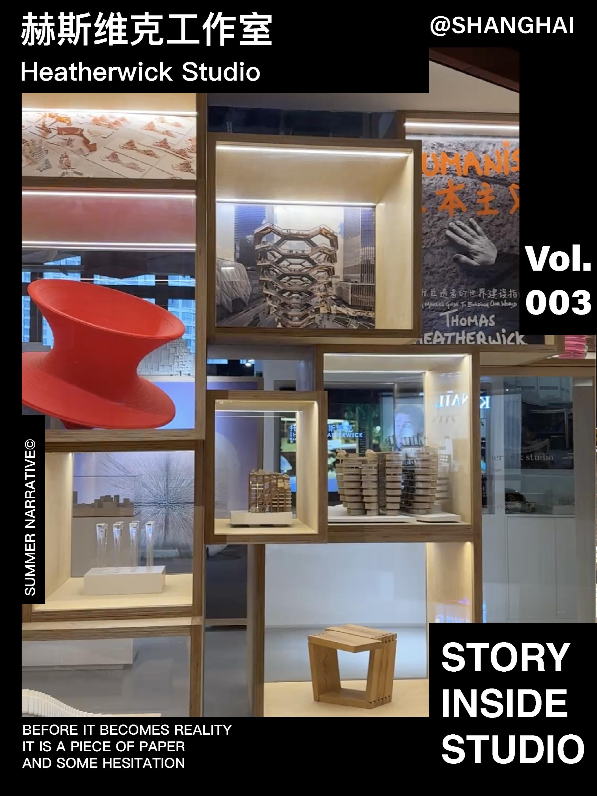
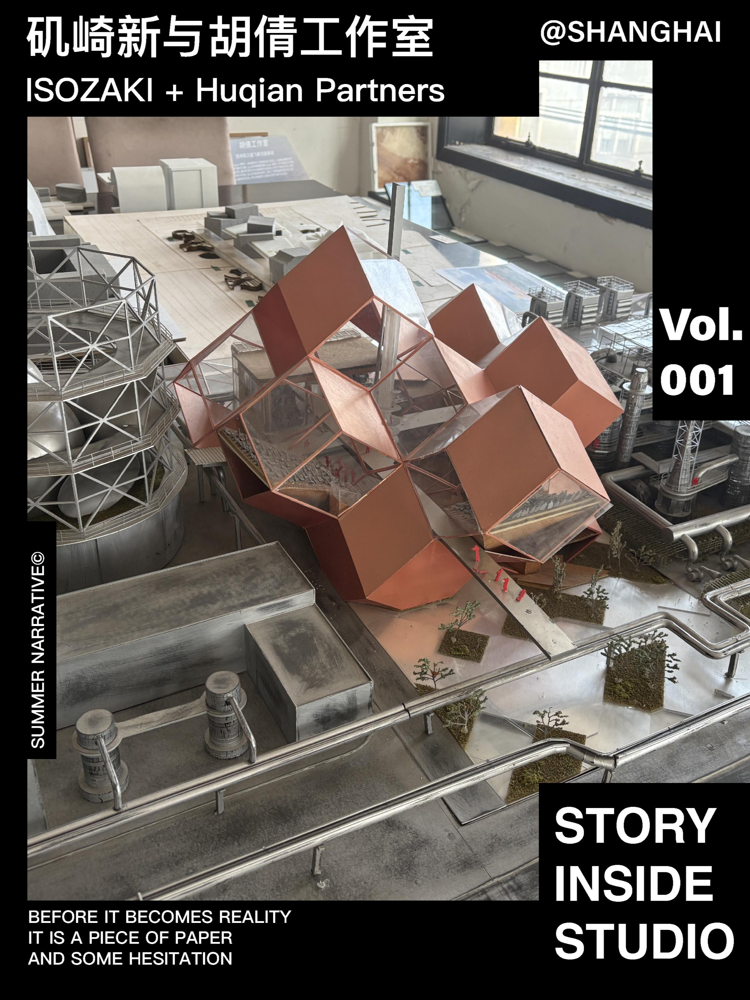
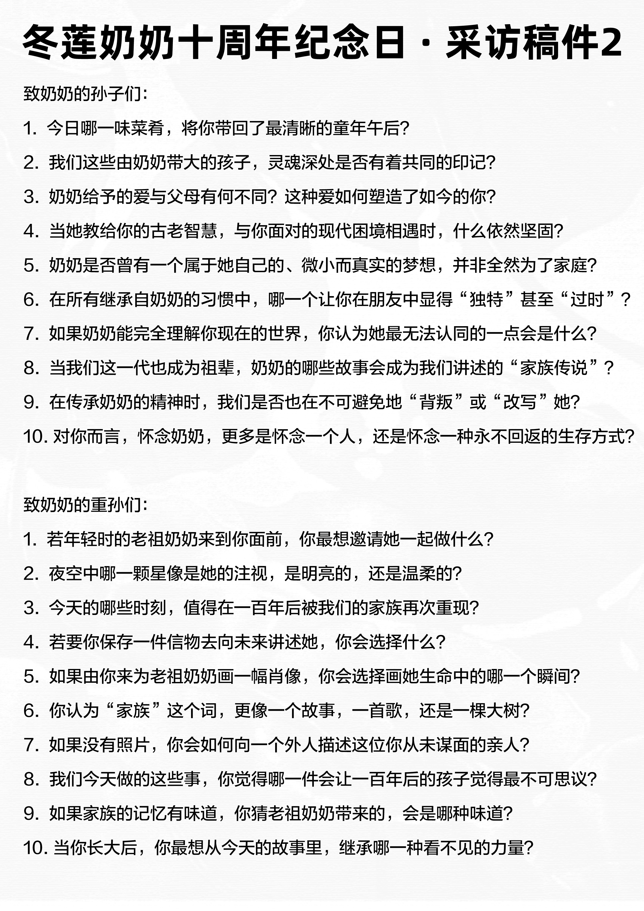
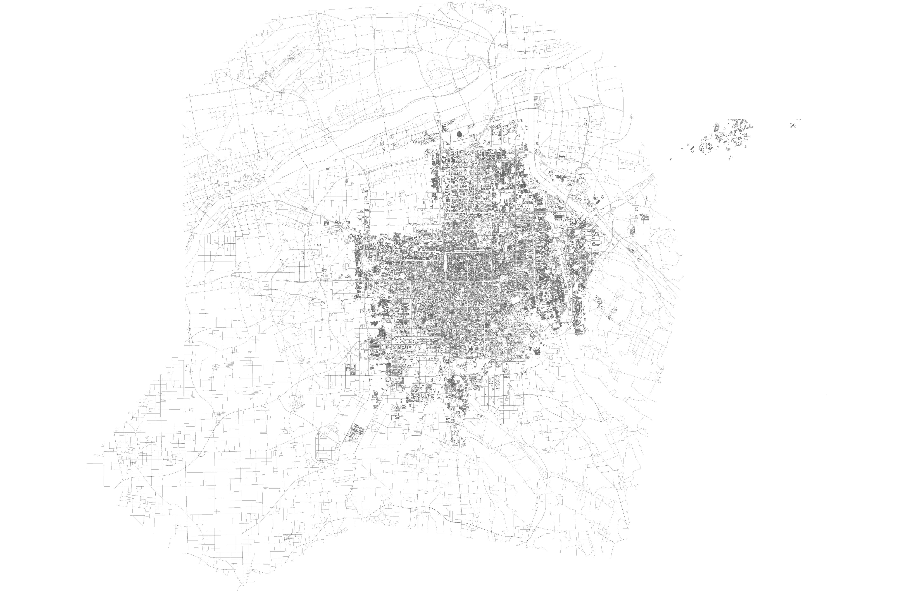

概念设定集 · 第一卷THE SETTING BOOK · VOL.01
把复杂价值，变成公众叙事TURNING COMPLEX VALUE INTO PUBLIC NARRATIVE
这是一本设定集，不是作品集。作品集讲"我做了什么"，设定集讲"这个世界为什么存在、谁在它里面、它是怎么来的"。沿墙往下走。 This is a setting book, not a portfolio. A portfolio says what I did; a setting book says why this world exists, who lives in it, and how it came to be. Walk along the wall.
00:00:00:00 — REEL 01
FRAME 01 / 96
概念图 01 · 场景CONCEPT 01 · SCENE

A1空间如何说话how space speaks B2记录者 · 李夏recorded by Summer Li
「叙事不是修饰，叙事是结构。
我的工作是翻译——把一座城市的剖面、
一个人的一生，翻成可以被看见的图层。」
"Narrative is not decoration — narrative is structure. My work is translation — a city's section, or a life, into layers that can be seen."
CH.01 — 世界观WORLDVIEW
CH.01 — 角色与场景CHARACTERS & SCENES
我走进别人的工作室，记录空间如何说话TEN STUDIOS, RECORDED
建筑事务所是城市里最安静的地方之一。那里的墙、桌子、模型和纸，都在说话。2026 年起，我扛着相机走进一间间工作室——矶崎新、Heatherwick、郭廖辉、goa——把空间如何说话记录下来。Architecture studios are among the quietest places in the city — yet their walls, tables, models and paper all speak. Since 2026 I have carried a camera into one studio after another, recording how space speaks.
进入作品 →ENTER → 角色档案 →ROLES →
A2矶崎新 · 第 01 期No.01CH.02 — 事件EVENTS
记忆如何成为公共叙事MEMORY AS NARRATIVE

C3五道菜 · 一盏花灯five dishes · one lantern奶奶走后的第十年，我在老宅办了一场展览——五道菜、一桌采访、一盏花灯。把私人记忆翻译成全家人都能走进的公共叙事。美西大环线是另一件事：一条 66 号公路，一个夏天，把路变成共同的记忆。Ten years after my grandmother passed away, I held an exhibition in the old house — five dishes, a round of interviews, one paper lantern: private memory translated into a story the whole family could walk into. The West loop was another kind of story: one summer, one road, shared memory.
读《十年一味》全文 →READ → 看足迹 →FOOTPRINTS →CH.03 — 观察OBSERVATION
我读城市的方法：切开它，看结构CUT IT OPEN, SEE STRUCTURE
西安的城墙、云南的色彩、美西的路。我带着建筑学训练的一双眼睛行走，把城市读成剖面和图层——五个系列持续更新：建筑媒体观察、城市切片、工作室窥视、方法论、人话。The wall of Xi'an, the colours of Yunnan, the roads of the West — I walk with eyes trained in architecture, reading cities as sections and layers. Five series, ongoing.
进入观察 →ENTER → 打开地图 →MAP →
D4城墙 · 在地 · 田野wall · local · fieldAPPENDIX — 附录APPENDIX
从照片与物件中提取的五个色FIVE COLOURS FROM PHOTOS & OBJECTS
「如果你也有一件复杂的事想被讲清楚——
它值得成为下一个场景。」
"If you have something complex that deserves a story — it could be the next scene."
小红书 · SUMMER四二零XIAOHONGSHU · SUMMER四二零
THE WORLD OF SUMMER LI · VOL.01 · 2026 · 长夏叙事出品A SUMMER NARRATIVE PRODUCTION